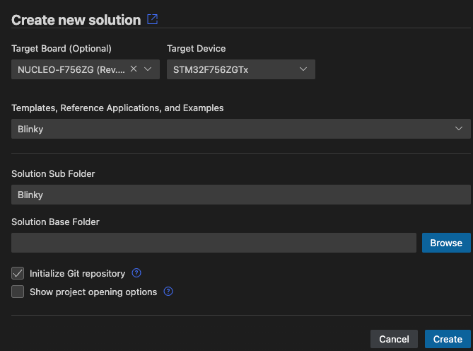

Installation
The Arm Keil Studio Pack (MDK v6) extension pack includes the CMSIS Solution extension and other extensions that you can use to work with CMSIS solution projects.
-
In VS Code, open the Extensions view and type
Keil Studio Packin the search bar. -
Click Install to start the installation. When the installation is finished, the CMSIS view icon appears in the activity bar.
You can create your first application or verify the installation with an example projecy and then check that you can build, run, and debug the application.
Note
If you do not want to install all the extensions available in the pack, you can install the
Arm CMSIS Solution extension standalone.
Search for CMSIS Solution in the Extensions view.
Verify the installation
The CMSIS boards list contains many examples that you can use to verify that the extension works correctly.
The following example explains how to start from a Blinky project for the STMicroelectronics NUCLEO-F756ZG development board. Adapt the steps for your target hardware.
- In the CMSIS view, click Create a New Solution to open the Create Solution view.
- Click the Target Board drop-down list. Enter a search term, for example "f756", and then select the
"NUCLEO-F756ZG (Rev.B)" board.

- Click Select. By default, the Target Device drop-down list shows the name of the device mounted on the board that you selected.
- Click the Templates, Reference Applications, and Example drop-down list. Enter a search term, for example
"Blinky", and then select the "Blinky" example from the web.

- Click Browse to set a base forlder for the solution, then click Create.
 - Confirm that the Arm Tools Environment Manager extension can automatically activate the workspace and download the
tools specified in the
vcpkg-configuration.jsonfile included in your project.

Now you can now build and debug the example project. During the build process missing software packs may be downloaded.